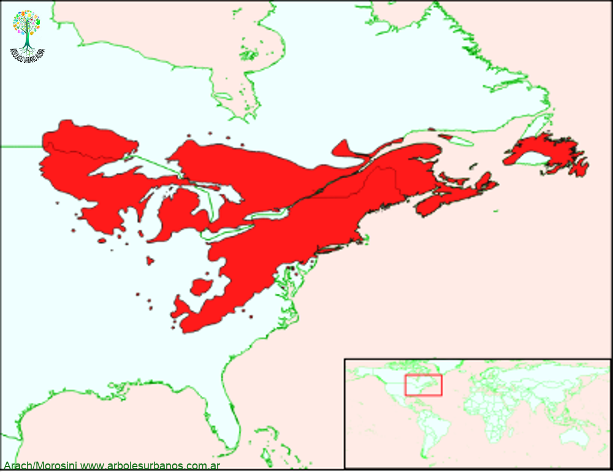

Click en las imágenes para ampliar

{kind=link}
{kind=link}
{kind=link}
Pino Blanco del Este
Familia botánica: pináceas
Origen: Esta especie es originaria del noreste de norteamérica, desde el sur de la peninsula de Terranova, hasta Delaware en estados unidos y desde la costa atlántica hasta rodear los grandes lagos, cabe mencionar que esta especie posee una variedad que ahbita la región montañosa del sureste de México y Guatemala denominada Pinus strobus Var. Chiapensis. En suelos arenosos forma rodales puros, aunque generalmente convive con otras especies latifoliadas como álamos, robles, arces, fresnos, etc.
Descripción general: Es un árbol de gran tamaño de hasta 40 metros de altura y un metro y medio de diámetros, se citan ejemplares de 56 metros de altura y 2 metros de diámetro a la altura del pecho. Su corteza juvenil es delgada, lisa y de coloración gris verdosa, en árboles adultos la corteza es de color marrón grisáceo, profundamente surcada longitudinalmente.
Estróbilos: los masculinos son de un vivo color amarillo, reunidos de hasta 12, en los extremos de los brotes jóvenes. Los estróbilos femeninos son verdes en principio, llegando a ser de color marrón rojizo cuando maduran, esto es a los dos años, tiene una longitud de 8 a 15 cm. son curvados y delgados y con frecuencia con resina en el extremo de sus escamas
Reproducción: Se realiza por semillas, las variedades por injerto Usos: Desde el siglo XVII, esta especie era considerado una fuente de pertrechos navales, grandes ropdales estaban reservados para el uso de la marina real inglesa, ya que se los destinaba para la obtención de mástiles para embarcaciones, además era muy solicitado para la construcción de edificios, tal fue su uso que era el emblema de las primeras monedas que circularon en Nueva Inglaterra
Particularidades: del mismo modo que el árbol de la vida gigante, (Thuja plicata) esta especie fué y es fuundamental en la cultura de los pueblos originarios de la región de los grandes lagos.